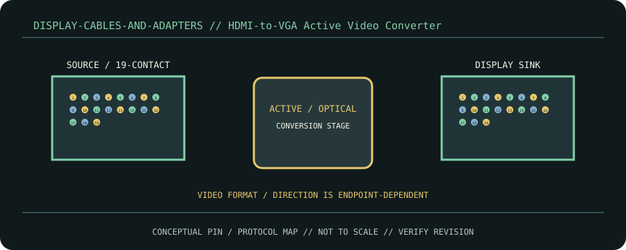

[ CABLE / ADAPTER RECORD // ACTIVE HDMI TMDS TO ANALOG VGA CONVERSION ]
HDMI-to-VGA Active Video Converter
HDMI Type-A digital source converted to DE-15 analog RGBHV; directional source HDMI→VGA sink.

CLASSIFICATION: Display cables and adapters. Identify protocol, direction, pinout and exact cable revision before connection.
Interface and capability
| Standard / protocol | Active HDMI TMDS to analog VGA conversion. Connector appearance alone does not establish compatibility. |
|---|---|
| Endpoint / pinout | HDMI Type-A digital source converted to DE-15 analog RGBHV; directional source HDMI→VGA sink. |
| Capability / limits | Model-specific converters often top out at 1920×1080/60; VGA cable length and converter EDID affect output. |
| Certification / length | Standards define interface requirements, not every assembly’s performance. Certification, mode, current/power rating, direction and maximum length belong to the exact product/revision and complete channel; verify its manufacturer specification. Do not infer certification from connector shape or marketing terminology. |
Compatibility & handling
- A passive cable cannot perform this conversion. VGA has no audio; some units need USB power or provide a separate audio jack.
- Inspect connector keying, latch, contact condition, shielding, jacket and model/revision marking. Stop if contacts are bent, loose, scorched, corroded or mismatched.
- Route without tension or sharp bends; follow product bend-radius, strain-relief, current and environmental limits. Test at the intended protocol and mode—physical fit is not a compatibility test.
Sources & further reading
- StarTech HDMI Video AdaptersPrimary standards-body or manufacturer reference for Active HDMI TMDS to analog VGA conversion; confirm exact cable assembly, certification and revision.